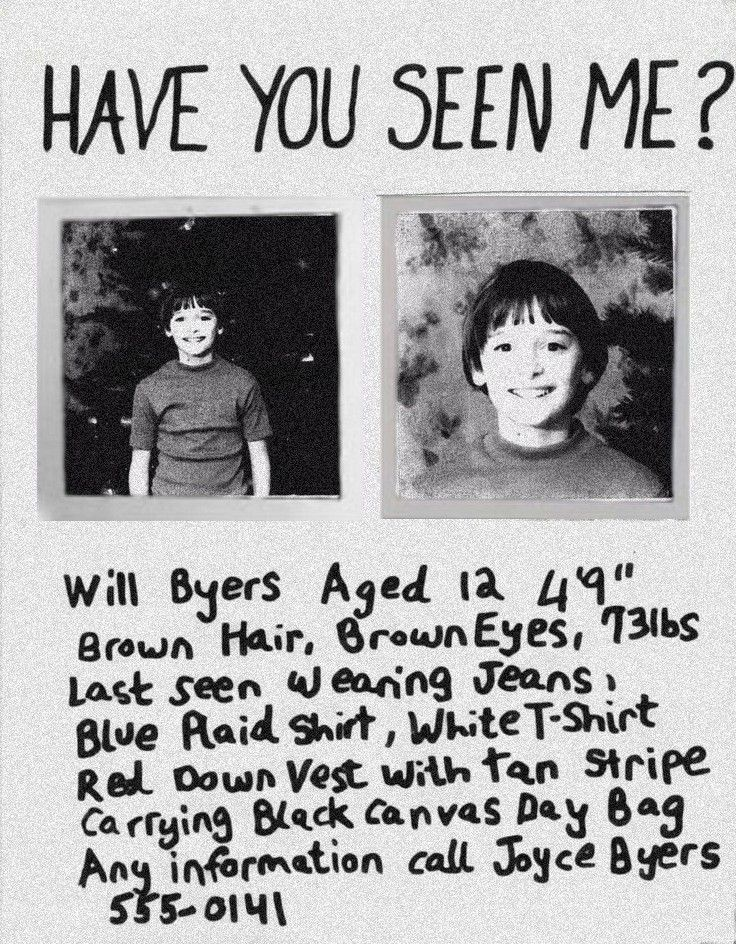
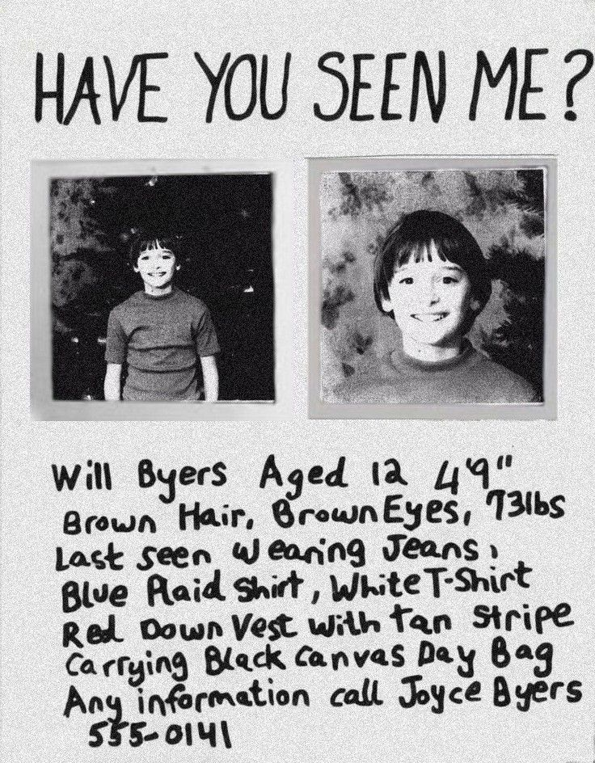

Policia de Hawkins
Departamento de Investigação
Departamento de Investigação
Nome: Thomas R. (38 anos)
Local: Floresta Norte
Descrição: Ouviu passos pesados atrás dele durante caminhada noturna. Quando olhou para trás, viu “uma silhueta alta e fina, mais escura que as próprias árvores”. A figura se moveu rápido demais para ser humana.
Nome: Doris Miller (66 anos)
Local: Lago Lover’s Point
Descrição: Luzes azuis pulsantes emergiram da água por cerca de 10 segundos. Segundo ela, “parecia alguém acendendo lanternas debaixo do lago”. O fenômeno desapareceu sem deixar ondulações.
Nome: Kevin B. (12 anos)
Local: Bairro Maple Heights
Descrição: Afirmou ouvir “alguém sussurrando seu nome” atrás da parede do quarto. Os pais verificaram e não encontraram nada. O sussurro ocorreu três noites seguidas.

 
